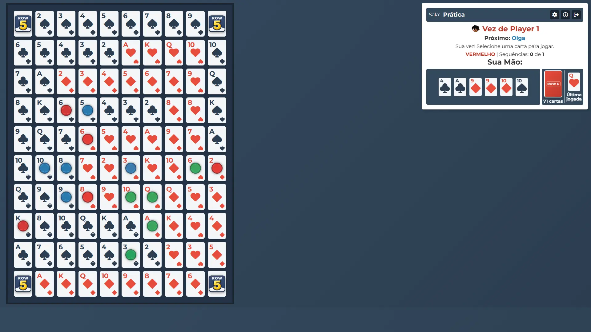
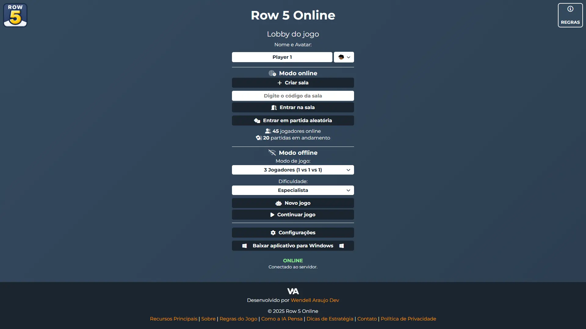
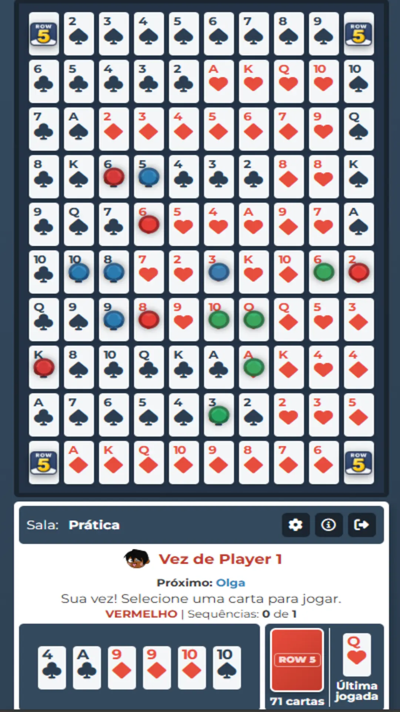
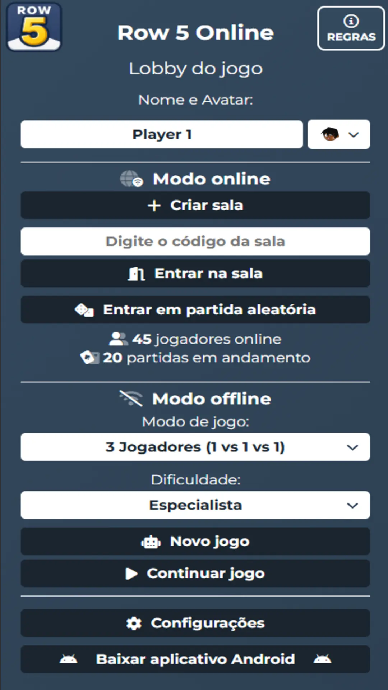

Recursos Principais
Multiplayer de 2 a 12 Jogadores
Crie salas privadas para jogar com amigos ou entre em partidas públicas para desafiar jogadores do mundo todo. Nosso sistema suporta diversas configurações de times e jogadores.
Modo Offline com Bots
Não tem com quem jogar? Aprimore suas habilidades no modo offline contra nossa Inteligência Artificial, com múltiplos níveis de dificuldade, do iniciante ao especialista.
Ranking Global e Níveis
Acumule pontos em partidas ranqueadas e suba de nível — de Bronze a Elite. Dispute posições no leaderboard global e ganhe bônus ao vencer adversários mais fortes.
Instale como um Aplicativo (PWA)
Adicione o Row 5 Online à sua tela inicial! Nossa tecnologia PWA permite que você jogue como se fosse um aplicativo nativo, com acesso rápido e uma experiência imersiva.
Contas e Perfil
Crie sua conta com email ou Google. Tenha um perfil persistente com username único, avatar personalizado e estatísticas salvas na nuvem.
Sistema de Amigos
Adicione amigos, veja quem está online e convide para jogar com um clique. Receba notificações push de convites e pedidos de amizade mesmo com o jogo fechado.
Matchmaking Inteligente
Encontre partidas em segundos. Nosso sistema busca jogadores reais, envia convites automáticos e cria salas públicas para você nunca ficar sem jogo.
Notificações Push
Receba alertas quando um amigo quer jogar ou quando recebe um pedido de amizade. Disponível em todos os dispositivos, mesmo com o navegador fechado.
3 Idiomas
Jogue em Português, Inglês ou Espanhol. O jogo detecta seu idioma automaticamente e todas as notificações são traduzidas.
O que os jogadores dizem
Sobre Este Jogo
Este projeto nasceu da paixão por jogos de tabuleiro e do desejo de criar uma plataforma digital acessível para um dos nossos clássicos favoritos. Desenvolvido como um projeto pessoal para aprimorar habilidades em tecnologias como JavaScript, HTML, CSS e a integração com Firebase para funcionalidades em tempo real, o jogo cresceu para se tornar uma comunidade de jogadores.
Nosso objetivo é oferecer uma versão fiel, gratuita e intuitiva do Sequence, permitindo que amigos e familiares se conectem e joguem juntos, não importa a distância. Projetamos a interface para ser limpa e a jogabilidade fluida, seja você um estrategista veterano ou um novo jogador aprendendo as regras.
Este é um projeto vivo e em constante desenvolvimento. Estamos sempre trabalhando em melhorias, novas funcionalidades e na otimização da experiência. Seu feedback é extremamente valioso para nós. Agradecemos por jogar e fazer parte desta comunidade!
Veja o Jogo em Ação

Tabuleiro em partida
Lobby do jogo
Tabuleiro em partida
Lobby do jogoRegras do Jogo Sequence
Sequence é um jogo que mistura estratégia e sorte. O objetivo é simples, mas dominá-lo exige atenção e planejamento. Abaixo estão as regras fundamentais para você começar a jogar.
Objetivo do Jogo
O objetivo é ser o primeiro jogador ou equipe a formar o número necessário de "sequências". Uma sequência é uma linha contínua de 5 fichas da mesma cor no tabuleiro, que pode ser horizontal, vertical ou diagonal.
- Jogando com 2 Equipes: A primeira equipe a formar 2 sequências vence.
- Jogando com 3 Equipes: A primeira equipe a formar 1 sequência vence.
Sua Vez de Jogar
Em cada turno, um jogador realiza três ações simples:
- Escolha uma carta da sua mão: Selecione a carta que corresponde a um espaço livre no tabuleiro onde você deseja colocar sua ficha.
- Coloque sua ficha: Clique no espaço correspondente no tabuleiro para posicionar uma ficha da cor da sua equipe.
- Compre uma nova carta: Após jogar, você deve comprar uma nova carta do baralho. Se esquecer de comprar antes do próximo jogador, você perde o direito de fazê-lo e joga com uma carta a menos.
Os Valetes
Os Valetes são as cartas mais poderosas do jogo e podem mudar completamente o rumo de uma partida.
- Valetes de Dois Olhos (, ): São "coringas". Você pode usar um Valete de dois olhos para colocar sua ficha em QUALQUER espaço livre no tabuleiro, sendo uma peça chave para completar uma sequência ou bloquear um oponente.
- Valetes de Um Olho (, ): São "removedores". Você pode usar um Valete de um olho para remover QUALQUER ficha de um oponente do tabuleiro, desde que essa ficha não faça parte de uma sequência já completa.
Elementos Importantes do Tabuleiro
Os quatro cantos do tabuleiro são espaços livres e funcionam como um coringa permanente para todos os jogadores. Eles podem ser usados como a primeira ou a última ficha de uma sequência, permitindo que você complete uma linha com apenas 4 fichas da sua cor.
Dicas de Estratégia
Quer melhorar seu jogo? Aqui estão algumas dicas rápidas para iniciantes e jogadores intermediários:
- Controle o Centro: O centro do tabuleiro oferece mais possibilidades de formar sequências em múltiplas direções. Tente dominar esta área desde o início.
- Jogue na Defensiva: Fique de olho nas jogadas dos seus oponentes. Às vezes, usar seu turno para bloquear uma sequência inimiga de 4 fichas é mais importante do que avançar com a sua própria.
- Use os Valetes com Sabedoria: Não gaste seus Valetes na primeira oportunidade. Guarde os Valetes de dois olhos para completar uma sequência ou para uma jogada crítica. Use os de um olho para quebrar sequências quase completas do adversário.
- Cuidado com as "Cartas Mortas": Se os dois espaços de uma carta que você possui já estão ocupados, ela se torna inútil. No nosso jogo, você pode trocá-la durante o seu turno para não perder uma jogada.
Como a IA Pensa
Hierarquia de Decisão
Adaptação ao Jogador
Pensamento Preditivo
Outras Inteligências
Perguntas Frequentes
Como jogar Sequence online grátis?
Acesse Row 5 Online, clique em "Entrar no Lobby e Jogar", crie uma sala ou entre em uma partida aleatória. Sem download, sem cadastro obrigatório. Jogue direto no navegador em qualquer dispositivo.
Posso jogar Sequence online com amigos?
Sim! Crie uma sala privada e compartilhe o código com seus amigos. Você pode jogar com 2 a 12 jogadores em equipes de 2 ou 3.
O Sequence está disponível como aplicativo?
Row 5 Online é um Progressive Web App (PWA) que pode ser instalado no Android, iOS e desktop. Funciona offline e tem experiência de app nativo.
Preciso criar conta para jogar?
Não é obrigatório. Você pode jogar online usando apenas um nome. Porém, criar conta salva seu progresso, ranking e histórico de partidas.
Quantos jogadores podem jogar ao mesmo tempo?
De 2 a 12 jogadores divididos em 2 ou 3 equipes. Também é possível jogar sozinho contra a inteligência artificial com vários níveis de dificuldade.
Entre em Contato
Tem alguma sugestão, encontrou um bug ou apenas quer dizer olá? Adoraríamos ouvir de você!
A melhor forma de entrar em contato é através do seguinte e-mail: wendellaraujodev@gmail.com
Tentaremos responder o mais rápido possível. Obrigado por jogar!